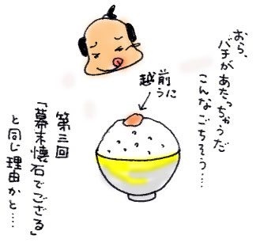

| 私はいわゆる「お取り寄せ」好きだ。
子どもの頃、漫画雑誌の広告にのっていた「しあわせになれるペンダント」を買ったことがあるほど、筋金入りの通販好きでもある。
インターネットが普及してからというものの、その頻度は確実に増えた。
何を買うかといえば、諸国名産の食べものが圧倒的に多い。
ご当地グルメのたぐいは、現地に行く時間と旅費を考えれば、取り寄せたものが美味しければ美味しいほどスバラシク得をした気分になり、「よしよし」と、ないはずのあごひげを撫でてしまう。
ずいぶん前にインターネットは「どこでもドアだ」だと言われていた。そのときはてんで実感がわかなかったが、諸国名産品をお取り寄せしたときは、「どこでもドアをありがとう！」と、ドラえもんに話しかけたくなる。
ノートパソコンを開けば、奈良県は吉野（柿の葉寿司）に、北海道は小樽（蒸気まんじゅう）に、香川県は讃岐（うどん）につながるのだ。おかげで、日本中を食べ歩いた気分になれる。あるとき、山梨県一宮から取り寄せた桃をむしゃむしゃと食べながら、ある考えがひらめいた。
もしかしたら「どこでもドア」は、タイムボカンのタイムマシン一号機「タイムメカブトン」のように、時間をさかのぼることもできるのではないか、と。
これは大発見！
手に汗を握りながら、タイムボカンの世界的科学者・木江田博士のような気分になって、私はパソコンに向かった。カタカタと勢いよく「江戸時代・おとりよせ・うまい・安い」などのキーワードを打ち込んでみる。
すると、どうだ。江戸時代の名品・逸品はネット上に数々あった。そのなかでも「これぞ」と私の琴線にふれた一品を取り寄せることにした。
それは創業文化元年の老舗の「練りうに」。福井の天たつという店のものだ。
『江戸時代より肥前のからすみ、知多のこのわたとならび天下の三代珍味と称されていた…』『創業以来松平家御用達として代々越前うにを扱っており...』『二百年にわたり受け継がれる越前うにの製法、吟味した素材、そして品質。どれ一つ損なうことなく（中略）全国へお届けいたします』
サイトに書いてあるうんちくを読めば読むほど、江戸時代そのままが保存されているような由緒正しさが伝わってくる。
初タイムスリップを飾るにふさわしい逸品ではないか。
しかし、これがなかなかお高い。
桐箱入り内容量215g 21,000円 。いったいこんな高価なものを誰が買うんだと疑問を抱きつつ、いちばん安いプラスティック容器入り40g 3,885円を買いものかごに入れた。
その瞬間、まるで江戸時代からお買い物をしたみたいな気分になり、ぽやぽやとうれしさがこみあげてくる。本当は福井の店から買ったのだが。お客様係から確認のメールがくると「江戸時代から返信メールが届いた」と思った。
こうして二日後、めでたく我が家のドアは「タイムメカブトン」のハッチとなり、江戸時代の逸品がボカンとやってきた。
包みをあけると、手のひらサイズの箱が出てくる。包装紙は古地図のようだ。よくよく眺めると、松平家の居城であった福井城の本丸復元図が印刷されている。
「文政十三年寅年三月写之 藤井吉長」とあるから、江戸時代に描かれたものに違いない。ぐっと江戸時代からやってきた感が高まる。包装紙の下は木目調にプリントされた紙箱が現れ、そこには朱雀の絵が描かれている。さらに紙箱の中にはクリーム色のプラスティック容器が隠され、容器のフタには青龍が描かれている。
なにやら、いかがわしい秘薬のようなたたずまいだ。
この練りうに、かなり厳重に守られてる。江戸時代っぽいパワーを感じつつ、いよいよ、プラスティックのフタをあける。テカテカのオレンジ色のうにがぎっしりと詰まっている。
スプーンの先っぽにすくってひとなめしてみる。初めはしょっぱい味しかしない。しかし追いかけるように磯の香りがどんどんひろがってくる。う、うまい。とろける・・・。
これが江戸時代の味かぁ。
うっとりとする私の頭にチョンマゲが生え、江戸時代の下級武士のような気分になった。
あたたかいご飯のうえに載せるとおいしいと同封してあったしおりに書いてあった。さっそくチャレンジ。しかしいつものように、うっかり玄米ご飯を炊いてしまったので、うにの香りをかぎそこねてしまった。玄米の香りがうにのほのかな香りに優ってしまうのだ。それほど上品で繊細な味だ。
最初は耳かき一杯くらいの量をちょびちょび食べていたが、少し勇気を出して多めに載せると、さらにおいしいことを発見する。この練りうにをちょこっと載せた一口が、コンビニのおにぎり一個分の値段に相当するのではと思うと、じつに畏れおおい。
この練りうには、松平家御用達だから基本的には将軍様が召し上がるものだった。ということは、平成に置きかえても、私なぞ庶民が口にするものではない。どうりで、「練りうに」などという文字を目にしないはずだ。
これを買うシーンが、もしもあるとしたら・・・、濃厚なうにの香りに酔いしれながら考えた。
「旧華族のおぼっちゃまと婚約する機会に、お義母さまに気に入られるために贈る」
きっとお義母さまはモノを見てすぐに、あら、天たつさんの、祖父母も好きなのよ、なんてほくそ笑むことだろう。わかる人にだけわかる高級品だ。どうしてもお使いモノ以外には考えられなかった。
江戸時代の逸品は、時を経てブランド品になっていた。
うちのタイムメカブトンがそう教えてくれた。

|